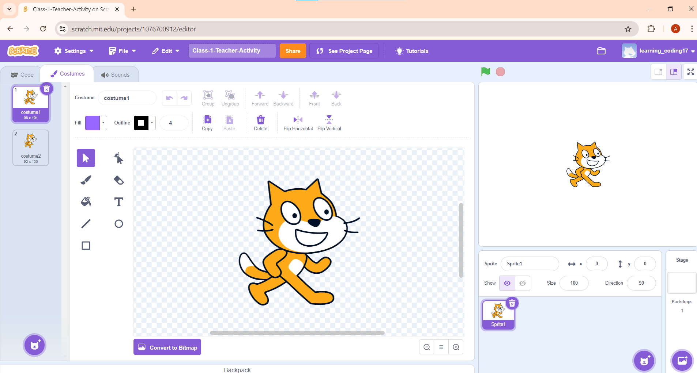
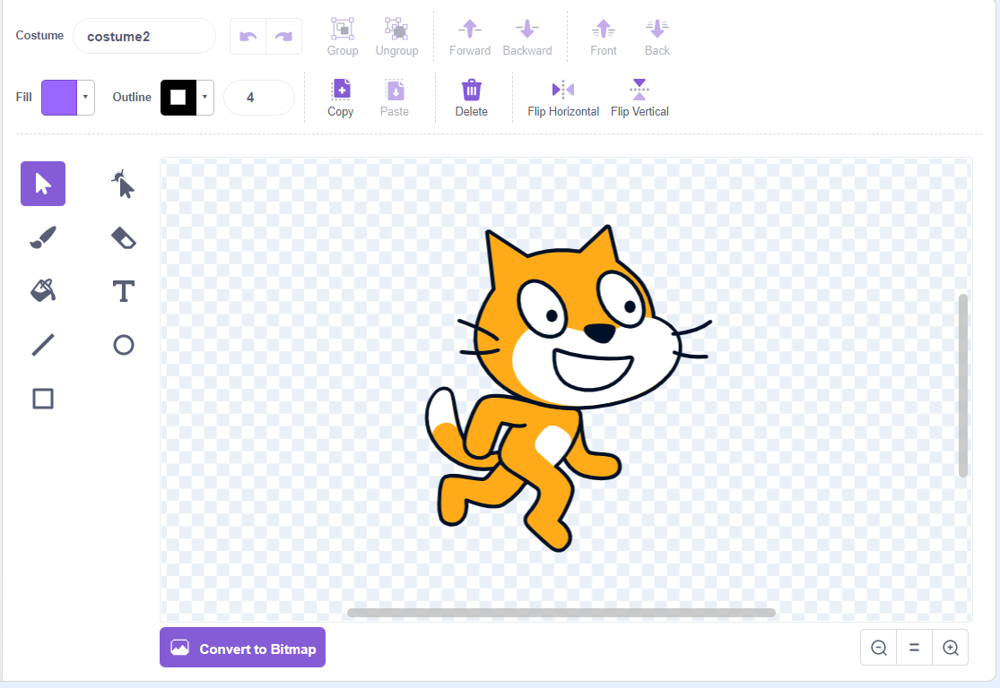
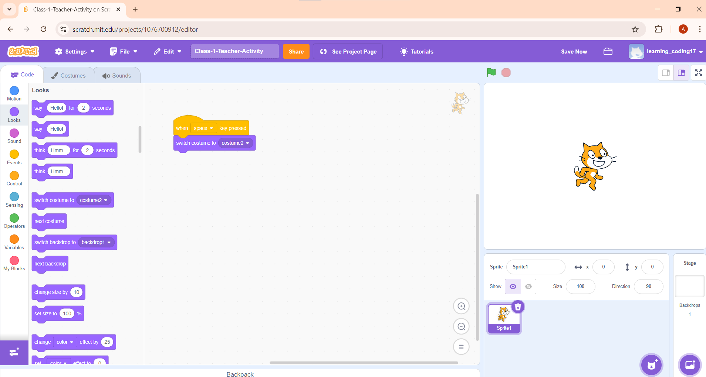
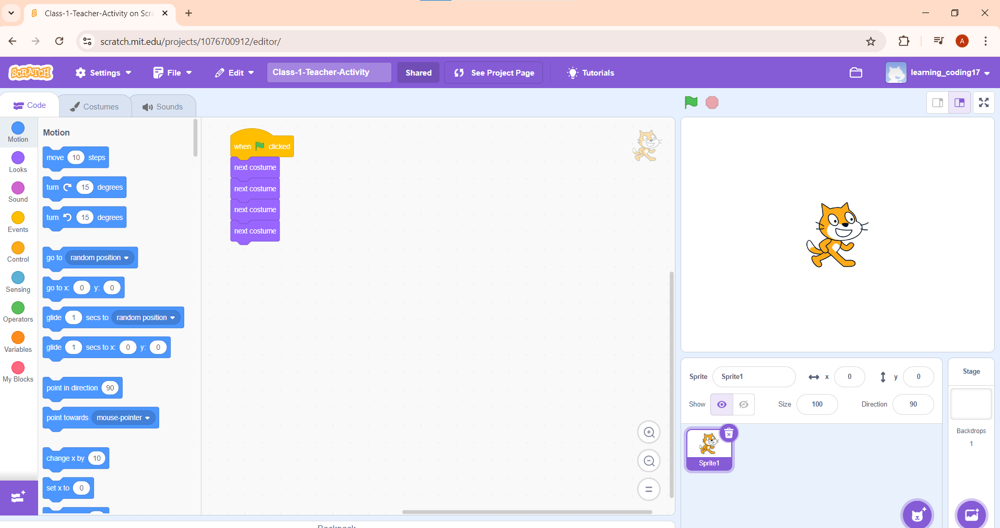
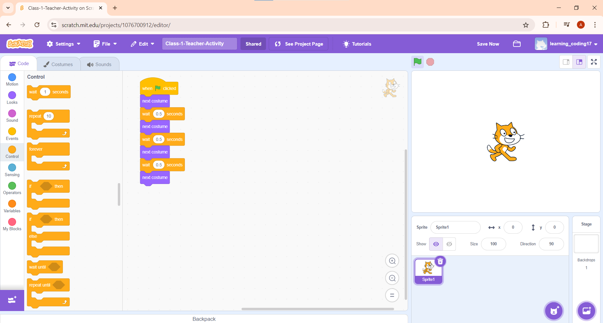
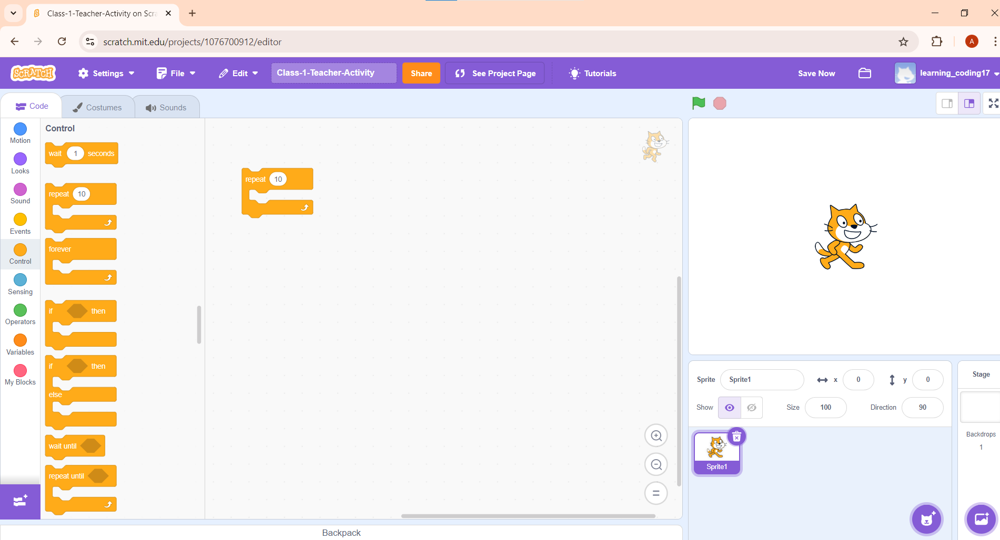
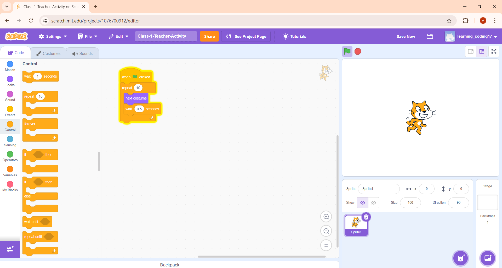

SPRITE
A sprite is an object or character in Scratch that can be programmed to perform actions based on scripts in a project using blocks.
Each sprite has scripts that function and run independently, and they can communicate with each other through broadcasts, variables, or sensing blocks.
CHANGING COSTUME OF THE SPRITE
The look of a sprite can be changed by using costumes.
It’s like your sprite with different clothes/poses.
When you create a new project in Scratch, by default, you get the Cat as the sprite.
You can go to the costumes tab and see the looks of a sprite.

Here you can see the cat sprite has 2 costumes
Each costume has a name :
costume1 and costume2 as the two looks of the sprite.

Now that we have seen the costumes of the sprite, let’s try to change the costume when you press the space key.
Do you know how to do that?🤔
1. Select “when space key is pressed” block from events.
2. Select “switch costume to” block from looks.

Here you can see how the costume changes when you press the space key.
If you wish to keep alternating between the costumes, you can select the “next costume” block.
REPEAT
Let’s say you want to show the sprite moving, then you need to keep changing the costumes multiple times.

But here, the change is too fast.
So, we can add a “wait” block.
The wait block waits before it executes the other command. The number we mention here is the number of seconds to wait before executing other instructions.

If you want to repeat something, we can use the “repeat” block from control.

You can mention the number of times you want a task to be repeated.
Let’s add the “next costume” and “wait” blocks inside the “repeat” block.
